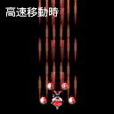

何者に対しても平等に見る性格である。ただ、仕事は妖怪退治である
為、妖怪に対しては厳しいポーズを取っているが、実際は人間も妖怪
にもさほど興味はない。
ただ、今回は神様を巡っての騒動である。神様の代弁者としても、た
だの妖怪退治とは勝手が違って、戸惑い気味。
武器は御札と陰陽玉。信仰心は薄そう。
攻撃性能は、全体的に無難な挙動で安定感のある装備となっています。
| 基本性能 | |
|---|---|
| 移動速度 | 普 |
| 特技 | 当たり判定が若干小さい |
| 装備紹介 | |
| TypeA 誘導装備 | ショット ：ホーミングアミュレット |
| オプション：後方配置 | |
| ホーミングアミュレットは敵をめがけて飛んでいきます。 かなりの誘導性能、連射数ですが、他の武器に比べ威力は劣ります。 オプションの位置は自キャラの後ろですが、そもそもホーミングなので、 オプション配置はあまり関係ありません。 雑魚戦はかなり楽に進めますが、その分ボス戦に苦労するかも知れません。 | |
| TypeB 前方集中装備
 | ショット ：封魔針 |
| オプション：前方配置 | |
|
前方に妖怪を退ける針を、やたらめったら投げます。 前方のみで攻撃範囲は狭いですが、威力は最上級です。 オプションの配置も、クラシックな配置となっており、安心した強さを誇ります。 雑魚戦でもボス戦でも強いですが、敵の配置を憶えるまでは若干苦労するかも知れません。 | |
| TypeC 封印装備
| ショット ：妖怪バスター |
| オプション：左右＆集中配置 | |
|
妖怪バスターは小さな二連御札を投げつけます。 高速移動と低速移動で大きく武器の性能が変化するのが特徴です。 高速移動時は、若干頼りない御札を投げますが、低速移動時は 霊夢がオプションを全て吸収し、最速の御札を広範囲に飛ばします。 雑魚戦では時折低速移動に切り替えることで、楽に進めると思います。 | |
ひねくれて見えるが、内実は誰よりも真っ直ぐ。いつも黒い服を着て
いるが、それは魔法使いは黒だと思い込んでいるのと、汚れが目立た
ないと言う理由から来ている。真っ直ぐである。
今回は霊夢が動いたから勝手に動いたが、異変らしい異変は起きてい
ない様に見える為、目的地に着いたら何を言えばいいのか考えながら
山に挑んでいる。
意外と信仰心は厚い。
攻撃性能は、オプションの配置に癖のある装備で、使いこなすと強くなる装備となっています。
| 基本性能 | |
|---|---|
| 移動速度 | 速 |
| 特技 | アイテムを吸収しやすい |
| 装備紹介 | |
| TypeA 高威力装備
| ショット ：スプレッドスター |
| オプション：トレース＆固定配置 | |
|
スプレッドスターは、敵にヒットすると破裂します。 オプションを集中し、全段当てるとかなりの威力を発揮します。 オプションは、自キャラの動きに付いてきます。 低速移動に切り替えると、その時のオプションの位置を固定します。 前方しか攻撃できないですが、オプションを旨く使えば、広範囲にも 高威力にもなるお得な装備です。 | |
TypeB 貫通装備

| ショット ：イリュージョンレーザー |
| オプション：近接配置 | |
|
イシュージョンレーザーは、押している間中出ていて、さらに敵に遮蔽 されることのない最強の武器です。 全キャラ中で最も攻撃幅が狭いと言う欠点はありますが、威力は高く、 貫通も使い易いです。 雑魚は移動しているだけで一掃でき、ボスも瞬時にダメージを与える ため便利な装備です。 | |
| TypeC 魔法使い装備
| ショット ：コールドインフェルノ |
| オプション：前方＆絶対配置 | |
|
コールドインフェルノは、冷気の炎を大量に浴びせます。 射程距離が存在し、オプションの前方のある程度の距離までしか攻撃する ことが出来ませんが、攻撃が途絶える事はなく、触れた敵を一掃します。 オプションは、普段は自分の目の前に配置されていますが、低速移動に 切り替えると、その場所にオプションを固定する事が出来ます。 射程距離の短さを、先読みのオプション配置でカバーすると、最高クラスの 威力と、最高クラスの攻撃範囲を持つ事が出来ます。 かなりずるいですね。 | |